| 日付 | 2026年11月1日（日） |
|---|---|
| 山域 | 伊豆 |
| メンバー | 家族（妻） |
| 山行形態 | 日帰り |
| アクセス | 車 |
| ルート (Map) | 細野高原駐車場 (8:25) - (9:42) 三筋山 (10:09) - (11:23) 細野高原駐車場 |
伊豆の南の方に三筋山という山があることを最近知った。
11月のススキがきれいらしいので、11月になるのを待って行って見ることにする。
細野高原の駐車場に到着。標高400m。
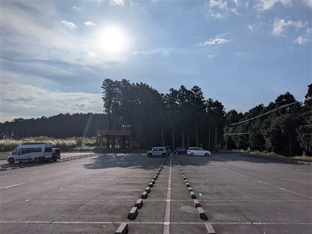
車道を歩いていたが、すすき遊歩道があったので入ってみる。
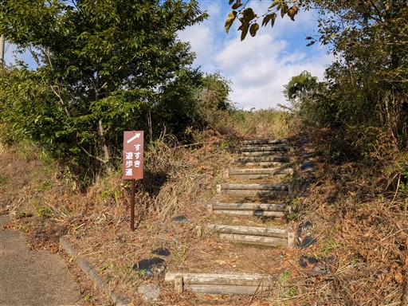
ススキはあるがちょっとまばらで、他の植物もあってあまり美しくない。
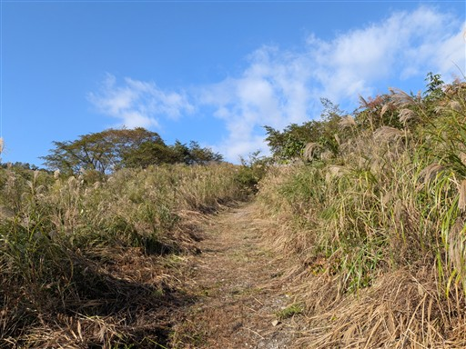
しばらく歩くと第一駐車場に到着する。
ススキのシーズンは10時以降は入れないようになる。
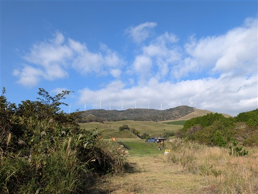
波打つ斜面が美しい。下の方は細野湿原という湿原になっているようだ。
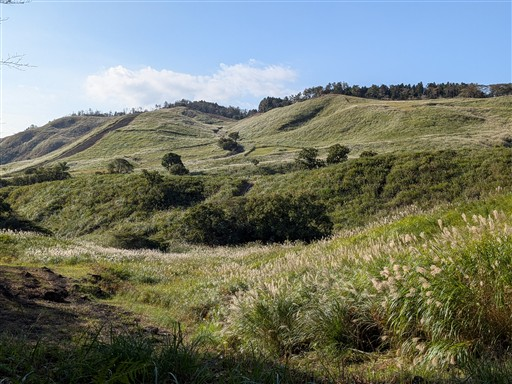
登山道はなく、ずっと車道が続く。樹林帯の中でこの辺りはつまらない道だ。
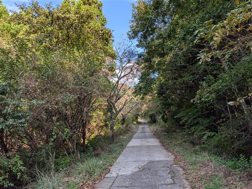
樹林帯を抜けると再び視界が広がる。
周囲は静かでほとんど誰も歩いていない。
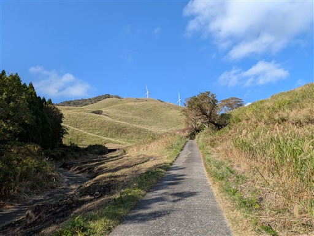
天城山周辺の山々が見えてくる。
背の高い山々は少し雲が引っかかっている。
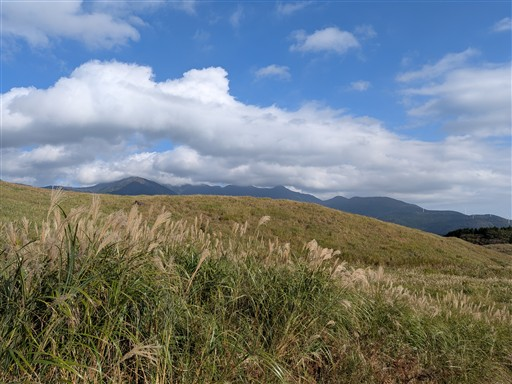
一番奥の駐車場に到着。
ここまで車で入っている人もいる。10時以降、脱出できるのだろうか？
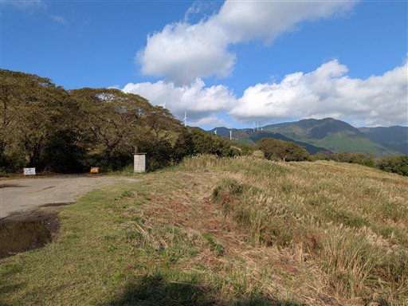
この辺りが一番のビュースポット。ススキの密度が濃く、素晴らしい風景が広がる。
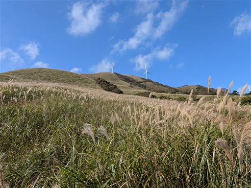
ススキの中を歩いていく。
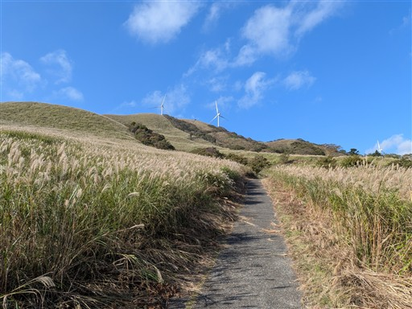
上から見下ろすススキの斜面。下から見上げた方がきれいかな。
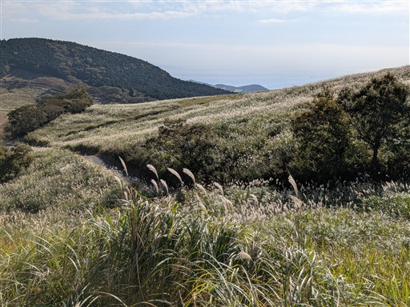
あちらこちらでトカゲをよく見かける。
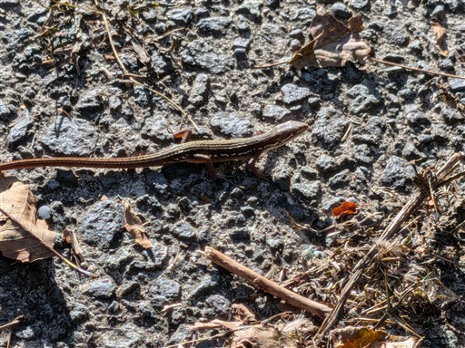
標高を上げると海が見えてくる。
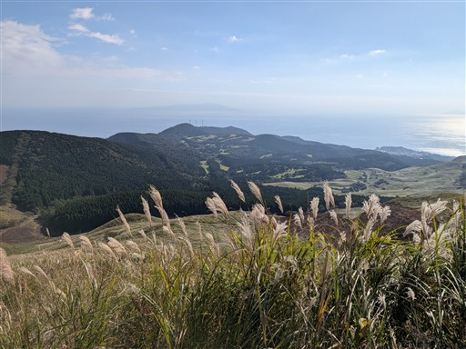
ここまでずっと車道だったが、山頂直下でようやく登山道っぽくなる。
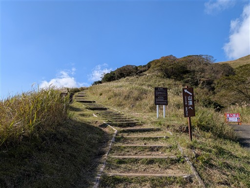
ビュースポットに到着。
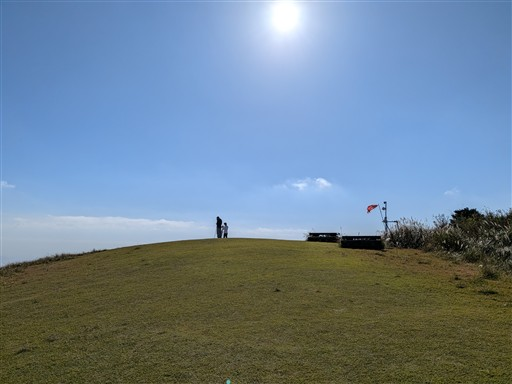
稜線に並ぶ風車群。
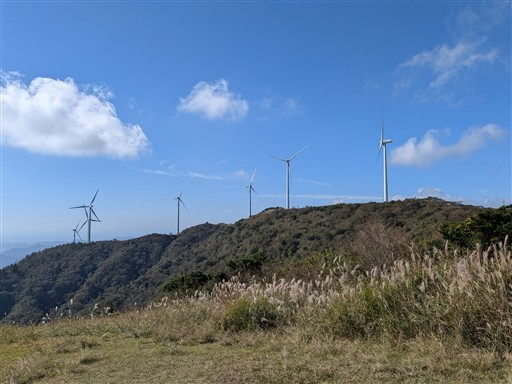
目の前に広がる海。霞んでいるのが残念だが、伊豆大島と利島が見えている。
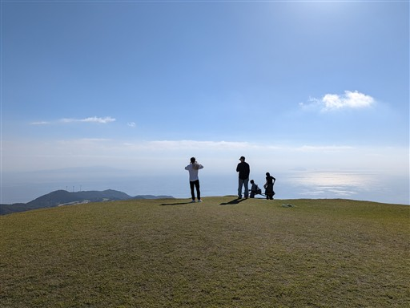
天城山にかかる雲はだいぶ取れてきた。
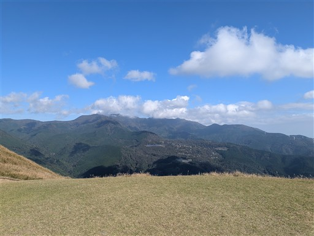
山頂まではあともう少し。
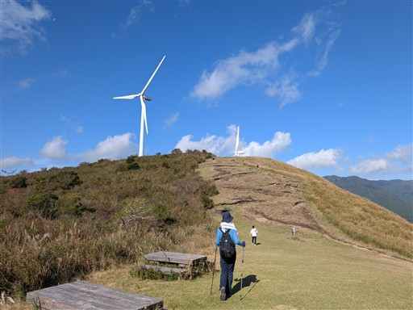
間近で見ると巨大な風車は迫力がある。
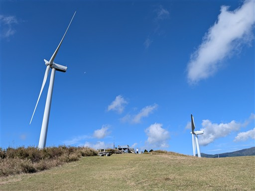
三筋山山頂に到着。標高821m。
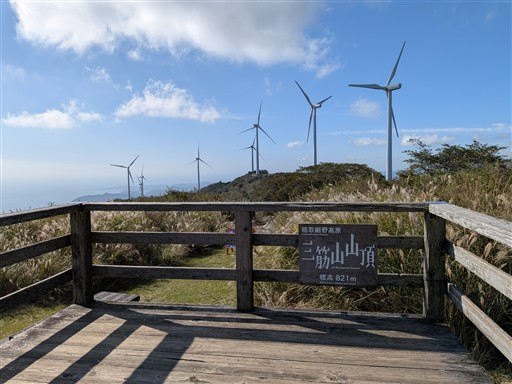
山頂の風景。奥に続く八丁池への道は、なぜか立入禁止になっている。
ビュースポットでおやつを食べたら下山を開始する。
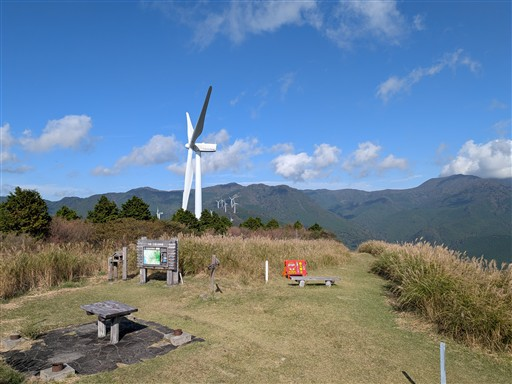
まだ子供の小さなトカゲ。かわいらしい。
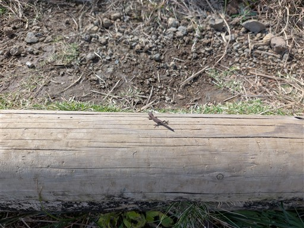
下山道もひたすら車道歩き。
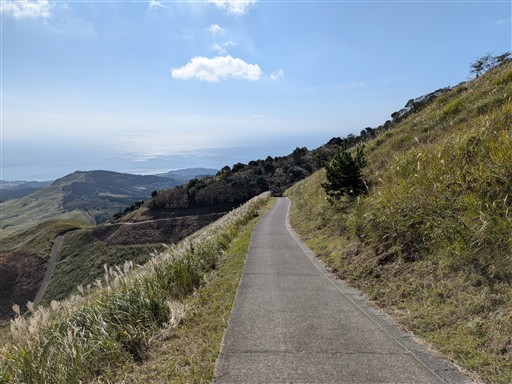
山焼きを行った跡が残っている。こうやって維持管理をしているようだ。
駐車場付近のすすき遊歩道は山焼きを行ってなかったからあまり美しくなかったのだろう。
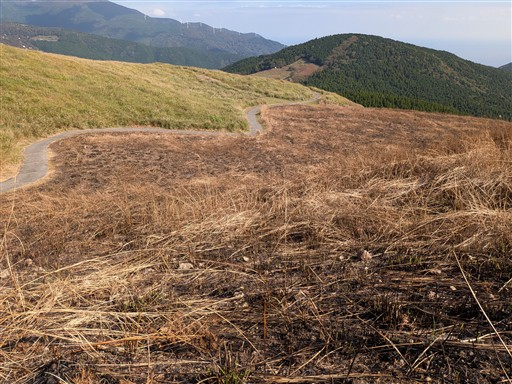
駐車場付近まで下りてくる。芝原湿原の標識が出ていたので一周してみる。
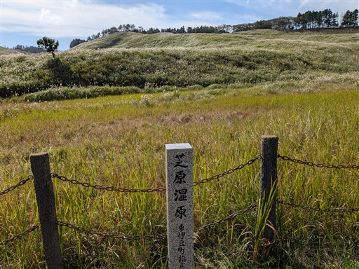
湿原と言っても特に目立つ何かがある訳ではない。
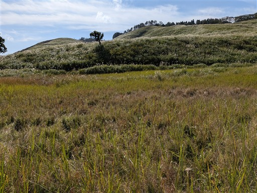
ヤマラッキョウの花があちらこちらに咲いている。
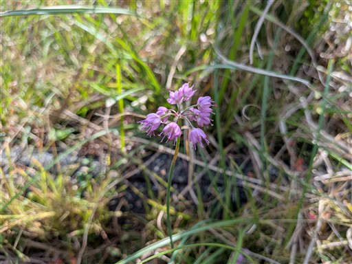
波打つ斜面が美しい。
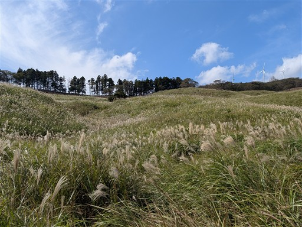
小さな湿原をぐるっと一周。
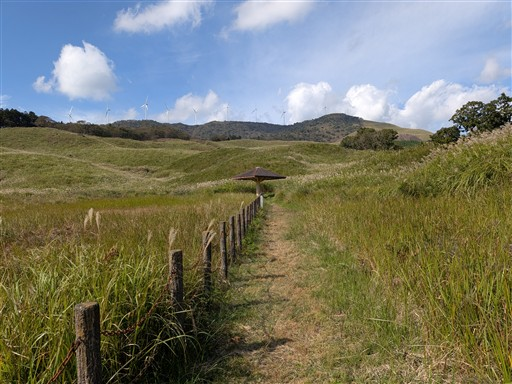
橋を渡る。緩やかな斜面しか目に入らなかったが、川があるとは思わなかった。
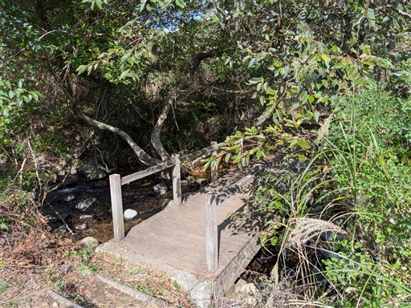
第一駐車場に戻ってくる。屋台が出ていて賑わっている。
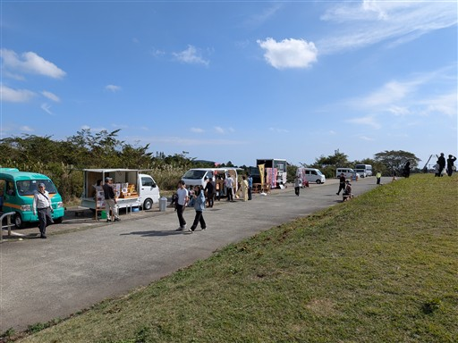
稲取高校の吹奏楽部が演奏をしている。立ち止まって聴いてみる。
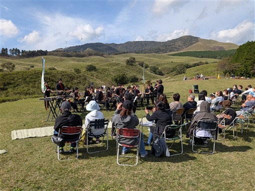
駐車場に戻ってくる。広大な駐車場はほぼ満車。
山はかなり空いていたが、意外に人が入っているようだ。
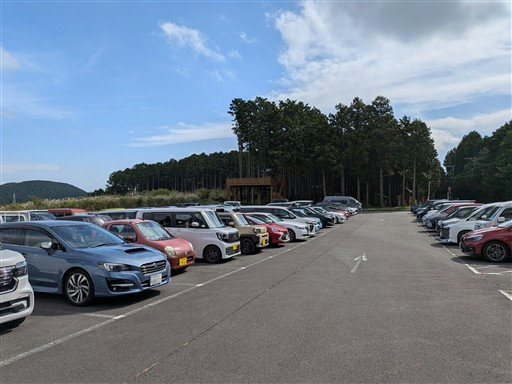
この辺りの名店、徳造丸で昼食。金目鯛がおいしかった。
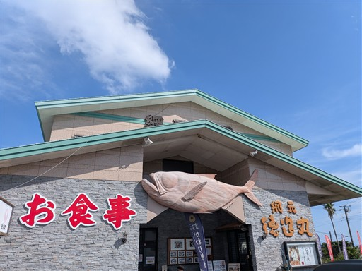
まだ時間が早いので、かんのん浜ポットホールを見に行くことにする。
以前、城ヶ崎海岸を歩いた時は、その存在を知らず見逃していたスポットだ。
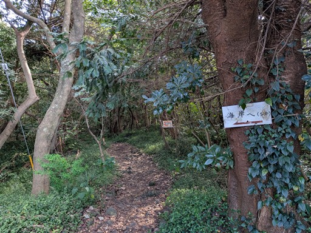
いがいが根に到着。ドーン、という重低音が鳴り響いている。
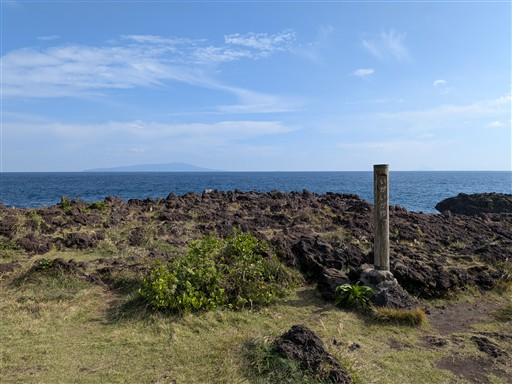
深い岩溝に波が打ち付ける音だ。
ものすごい高さまで水しぶきが吹きあがっている。
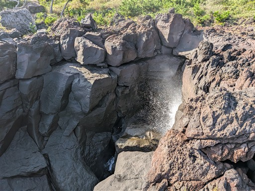
場所を移動して、かんのん浜。これが知る人ぞ知るポットホール。
穴だけなら各地にあるが、中の真ん丸な石まで残っているのは非常に珍しい。
直径70cmの巨大な球だ。
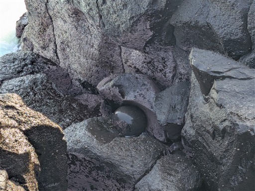
下りて触りたいが、激しい波が押し寄せるのでちょっと無理。
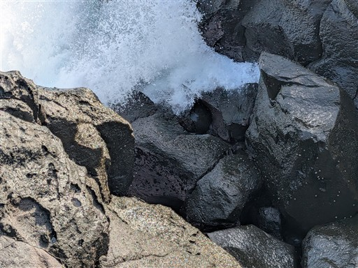
波にもまれて揺れている。自然にこんな球体ができるって不思議。
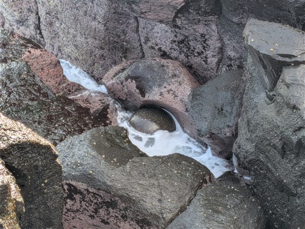
近くにある大室山にも寄ってみる。
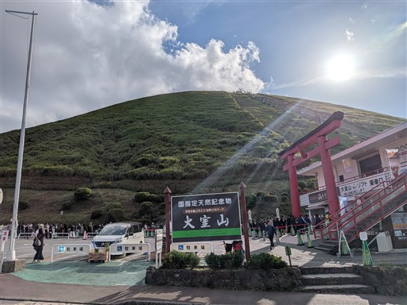
なんとリフトは1時間待ち。さすがに大室山にここまでは待てない。諦めて帰る。
こんなに人気の観光地とは思わなかった。ポットホールは誰もいなかったのに。
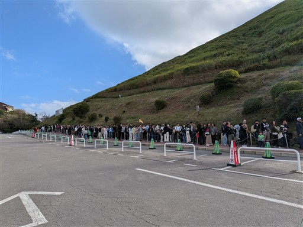
帰りにミカンを買って帰る。
本日は軽い登山でほとんどが車道歩きだったが、ススキと解放感ある景色を眺められて満足だった。
道路の混雑はうんざりだったが、細野高原自体は混雑しておらず、のんびり楽しむことができた。
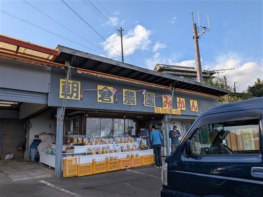